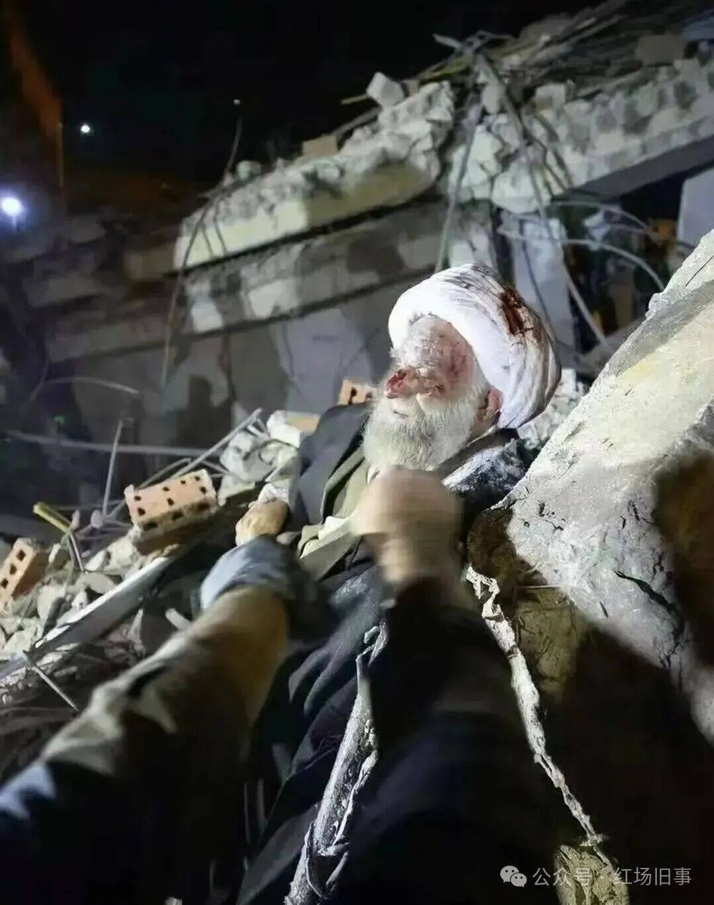
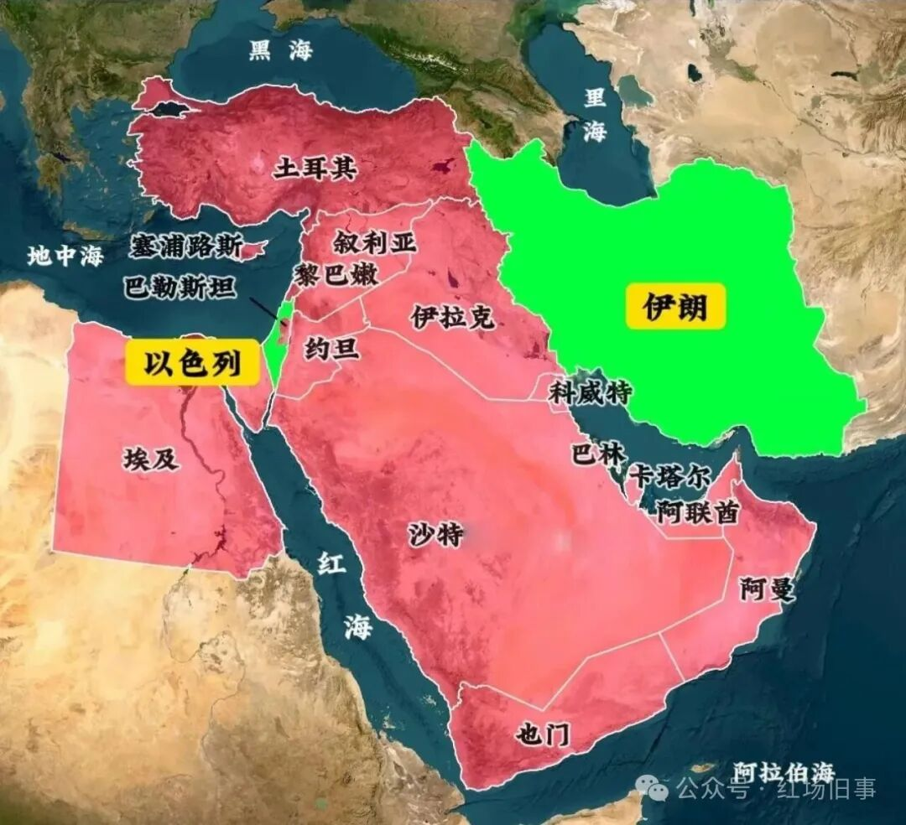
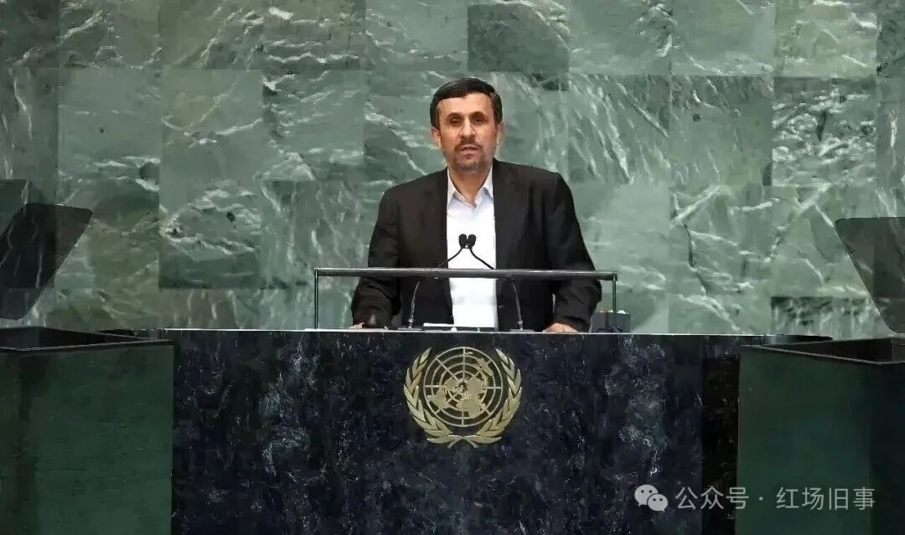
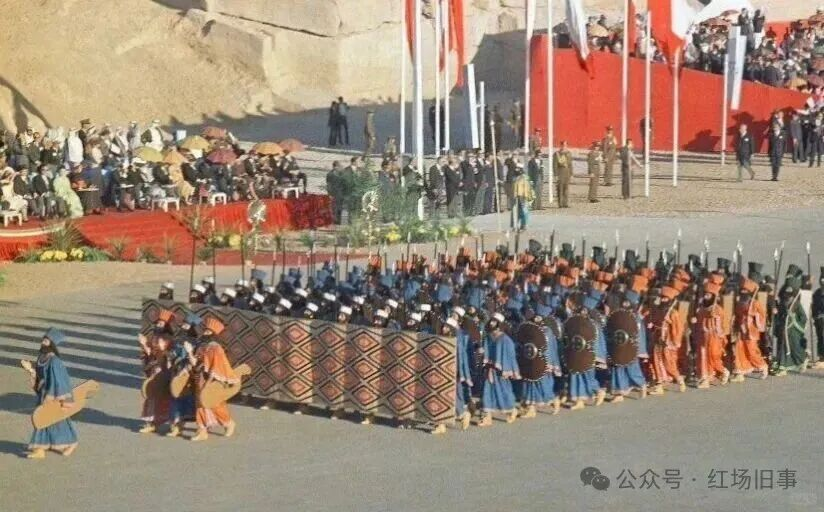

1979年2月，德黑兰。霍梅尼的追随者冲进以色列驻伊朗大使馆，摘下希伯来语标识，换上巴勒斯坦解放组织的旗帜。那一刻，一个时代终结了，跨越三十年的“波犹蜜月”，在革命的口号声中化为灰烬。46年后，2026年3月，德黑兰的夜空再次被爆炸撕裂。伊朗最高领袖在美以联合空袭中遇难，导弹从霍尔木兹海峡两岸呼啸而过。

两个曾并肩作战的“天然盟友”，为何走到不死不休的今天？谁，制造了这场持续半个世纪的仇恨？
一、大国棋手：美苏（俄）的“催化剂”角色
回望46年历史，美苏两个超级大国在不同阶段扮演了隐秘的推手。
美国：从蜜月制造者到直接打击者
1953年，美国中情局策动“阿贾克斯行动”，推翻民选首相摩萨台，将巴列维重新扶上孔雀宝座。此后二十余年，伊朗成为美国在中东的“双子塔”之一，与以色列结成非阿拉伯同盟。美国不仅向伊朗出售最先进的F-14战机，更在1967年向德黑兰大学交付核反应堆，亲手埋下伊朗核计划的种子。1979年，卡特政府误判局势，秘密接触霍梅尼团队，试图延续对伊朗的影响力。但新政权的第一把火，就烧向了“大撒旦”美国。444天的人质危机后，美伊彻底决裂。此后数十年，美国将伊朗列入“支持恐怖主义国家”名单，两伊战争期间支持伊拉克，1988年击落伊朗民航客机，2020年暗杀苏莱曼尼。2026年2月，美以联合发动“史诗怒火”行动，从“蜜月制造者”变成“直接打击者”。
苏联/俄罗斯：从默许者到核保护伞
斯大林晚年对以色列的“变节”深感失望，那个他曾亲手在联合国扶植起来的犹太国家，竟在朝鲜战争中倒向美国。莫斯科转而支持埃及、叙利亚等激进阿拉伯国家，对伊以联盟选择了默许。两伊战争期间，苏联玩起精妙的“平衡术”，同时向伊拉克和伊朗输送武器。冷战结束后，俄罗斯调整策略，与伊朗加强核能合作，援建布什尔核电站，出售S-300防空系统。当美以联手对伊朗“极限施压”，莫斯科成为德黑兰的“核保护伞”。
二、身份演化：从世俗王朝到“抵抗轴心”
伊朗的国家认同，在46年间完成了两次跃迁。巴列维时代，伊朗是“波斯湾的宪兵”，以波斯帝国－雅利安认同为根基，推行亲西方、世俗化路线。那时的伊朗与以色列合作，是地缘利益的自然选择。1979年革命后，什叶派伊斯兰认同取代波斯民族主义，成为官方意识形态。新政权将“消灭以色列”写入国策，将支持巴勒斯坦作为融入伊斯兰世界、争夺话语权的“抓手”。反对以色列不再是外交选择，而是宗教义务。

进入21世纪，伊朗逐步成长为“抵抗轴心”的领袖。从黎巴嫩真主党到也门胡塞武装，从叙利亚战场到伊拉克什叶派民兵，伊朗编织起一张覆盖整个中东的代理网络。其反西化思想与民族尊严深度绑定，“抵抗”成为最高频的政治话语。
三、安全困境：从“边缘盟友”到“生存威胁”
以色列的身份，在与伊朗的演变中不断重构。建国之初，以色列通过“边缘政策”联合伊朗、土耳其等非阿拉伯国家，构筑战略包围圈。那时的伊朗，是最可靠的“边缘盟友”。当伊朗输出革命、扶植真主党、公开宣称“将以色列从地图上抹去”，以色列的安全焦虑与日俱增。国土狭小、人口集中，用美国军方的话说，以色列是一个“一枚原子弹即可搞定”的小国。伊朗的核计划、弹道导弹、代理人网络，被以色列视为“生存威胁”。更深刻的是，以色列逐渐形成一种“绝对安全观”：只有彻底消除所有潜在威胁，才能确保安全。但这种追求本身就是一个悖论，每一次以安全之名的军事行动，都在制造新的仇恨。
四、终极追问：意识形态，还是国家利益？
当两个文明古国都将对方的存在视为对本民族认同的根本否定，和平的希望在哪里？意识形态给出了答案：霍梅尼说以色列是“毒瘤”，内贾德说要“从地图上抹去”；以色列的右翼则宣称“不会有巴勒斯坦国”。在意识形态的战场上，妥协就是背叛。

但国家利益给出了另一幅图景：20世纪80年代两伊战争期间，刚刚高喊“消灭以色列”的霍梅尼，默许手下接收来自特拉维夫的军火。1981年以色列摧毁伊拉克核反应堆，伊朗视其为“神助攻”。当共同的敌人伊拉克兵临城下，“小撒旦”的武器能救命。那么，究竟谁主导了历史？也许答案藏在一位英国政治家的名言里：“一个国家没有永恒的朋友，也没有永恒的敌人，只有永恒的利益。”意识形态是动员民众的旗帜，国家利益是暗中计算的算盘。当两者一致时，旗帜高高飘扬；当两者冲突时，算盘往往胜出。
尾声
1971年，德黑兰举行波斯帝国建国2500周年庆典。以色列特使与伊朗国王把酒言欢，摩萨德与“萨瓦克”的情报官员在宴会厅互换秘密。

2026年，德黑兰的废墟上空盘旋着以色列战机。那些曾并肩训练的军官，他们的后代此刻正在瞄准彼此。46年，足以让盟友变成死敌，让“天然伙伴”变成“不共戴天”。大国的棋子，历史的囚徒，意识形态的信徒，每个人都在这场博弈中扮演着自己的角色。只是当导弹划过夜空，当废墟上升起浓烟，一个问题始终悬而未决：下一次握手，还要等多少年？中东风云｜第六章 断交与转交——以色列大使馆变成巴勒斯坦使馆的那一天中东风云｜第四章 兄弟变仇敌的一夜：德黑兰，一场美国始料未及的双重背叛
文字与图片版权归各自权利人所有；排版根据抓取内容整理。